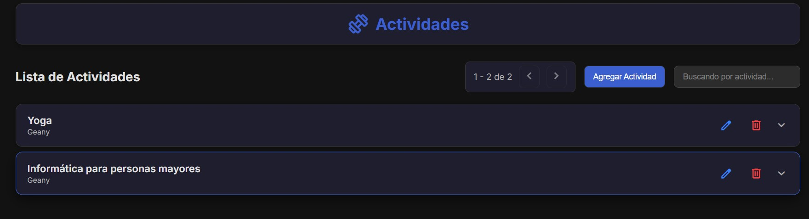
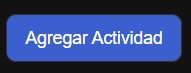
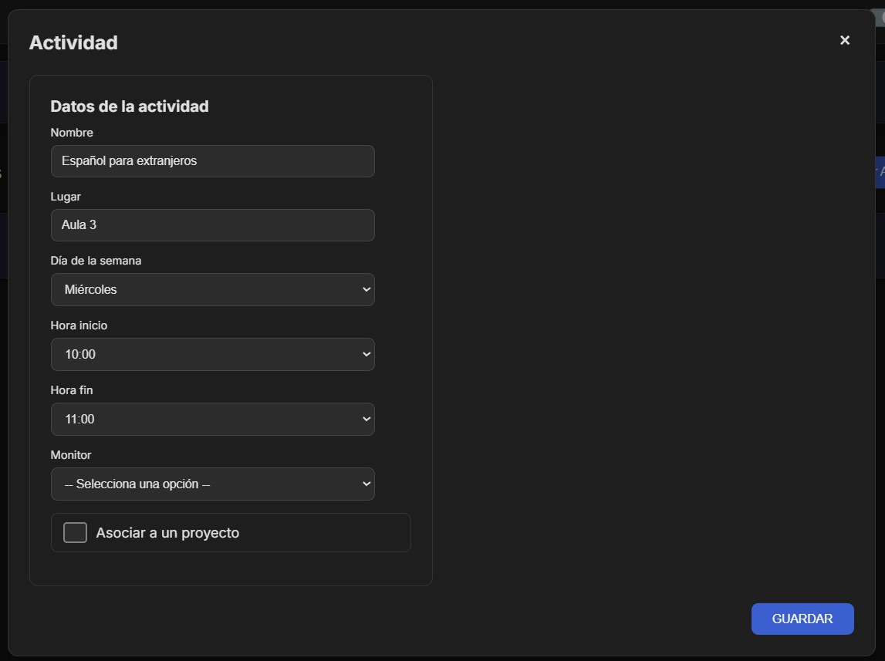
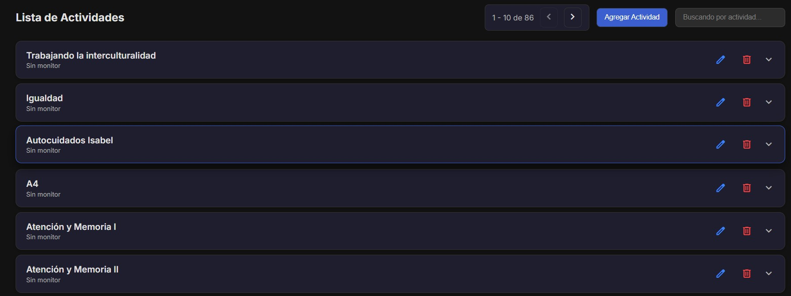
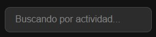
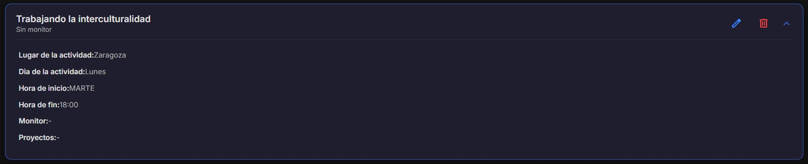

Gestión de Actividades
Registra y gestiona las actividades realizadas por la asociación.

CRUD de Actividades: Agrega nuevas actividades, edita los detalles de las existentes o
elimina las que ya no sean necesarias.

Este es el boton para abrir el formulario para agregar actividades

Estos son los botones que nos permiten editar y eliminar las actividades de manera individual

Este es el formulario para agregar actividades nuevas

Buscador: Localiza actividades específicas de forma rápida mediante el cuadro de
búsqueda integrado.

Este es el buscador para buscar actividades
Detalles: Cada actividad incluye descripción, fecha y vinculación con proyectos si
corresponde.

En cada actividad se puede ver su nombre, fecha, descripción y proyecto al que pertenece